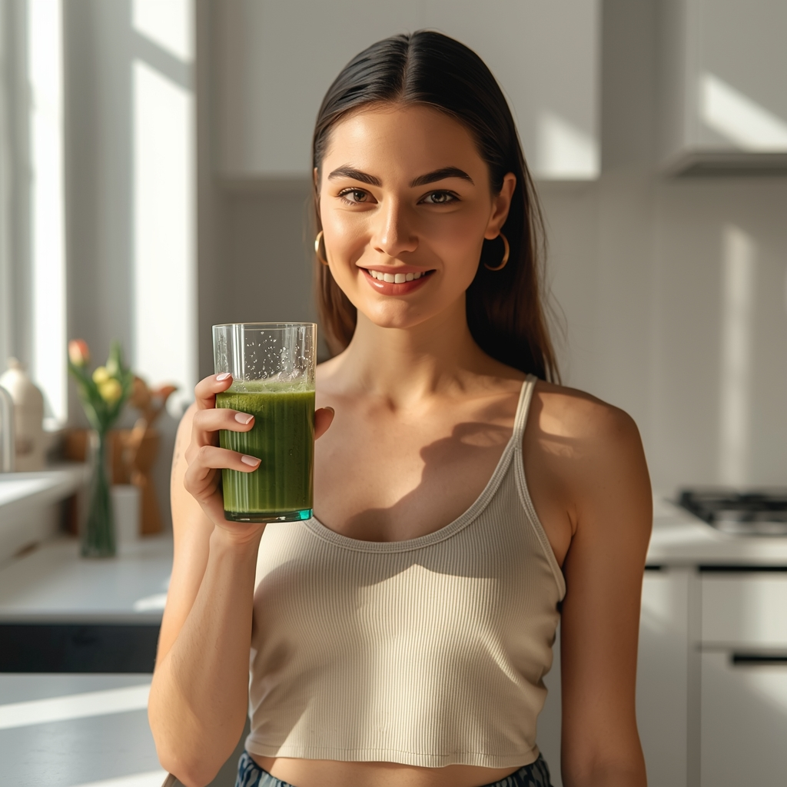
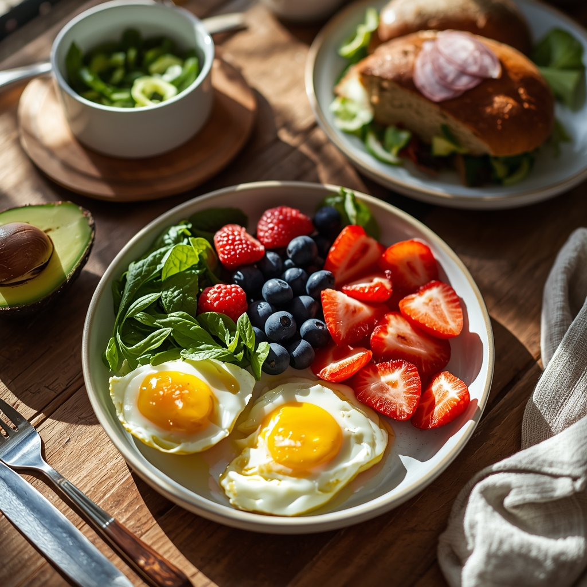
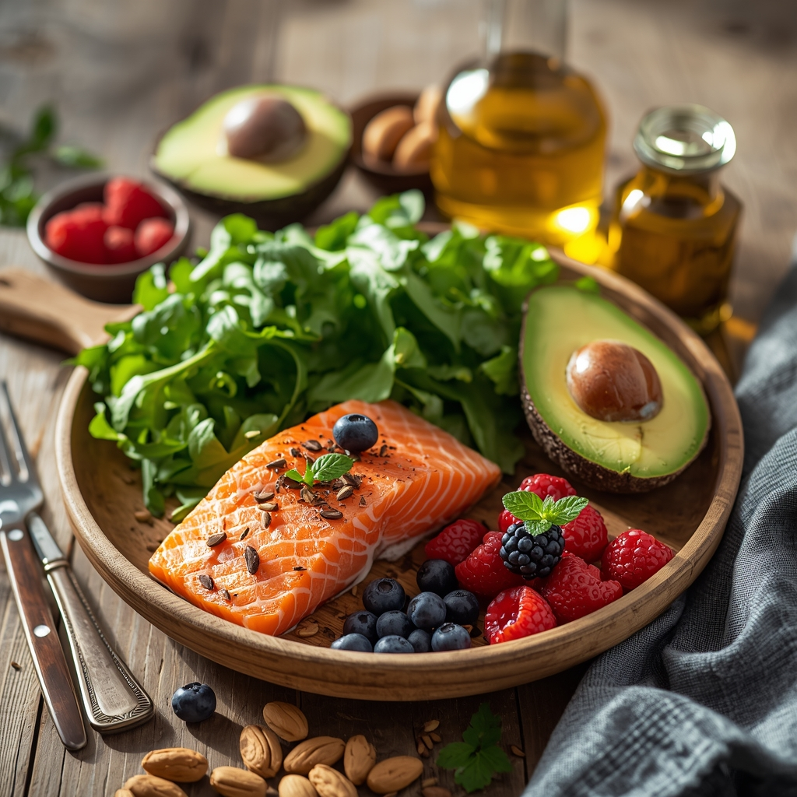

Индивидуальные консультации
Разбор рациона, целей и ограничений в формате один на один. Понятные рекомендации и план действий под ваш график и образ жизни.
Нутрициолог
Помогаю выстроить устойчивые пищевые привычки и поддержать метаболизм — без жёстких диет и чувства вины за еду.

Два основных формата работы — личный разбор ситуации и структурированное обучение в удобном темпе.
Разбор рациона, целей и ограничений в формате один на один. Понятные рекомендации и план действий под ваш график и образ жизни.
Готовим и питаемся правильно
Тематические программы: база сбалансированного питания, метаболические ориентиры и практические задания — чтобы закрепить навыки без спешки.
Я сопровождаю людей, которые хотят улучшить самочувствие, энергию и отношение к еде. Работаю с реальными продуктами и привычками — так, чтобы план был выполнимым в повседневной жизни.
Подход основан на научно обоснованных принципах питания и бережном изменении режима дня, сна и стресса — всё это влияет на метаболизм и результат.
Это не модная диета, а структура питания, которая учитывает энергозатраты, регуляцию сахара в крови и восстановление организма. Цель — стабильная энергия, комфортное пищеварение и предсказуемый прогресс.
Согласование режима с вашим графиком сна, работы и тренировок.
Белки, жиры и углеводы в пропорциях, подходящих именно вам.
Корректировки по сигналам тела — сытость, аппетит, активность.
Сбалансированные тарелки и натуральные ингредиенты — основа метаболического подхода без жёстких ограничений.


Сбор анамнеза, целей и ограничений. Первые рекомендации и план действий.
Регулярные созвоны, корректировка меню и ответы на вопросы в процессе.
Углублённая работа с метаболическим питанием: структура дня, меню и контрольные точки.
Отметьте пункты, которые чаще всего выполняются в вашем обычном режиме — так вы получите ориентировочную оценку соответствия рациона общим критериям сбалансированного питания. Это не диагноз и не замена консультации специалиста.
Напишите, чем могу помочь — подберём формат консультации. Ответ обычно в течение рабочего дня.